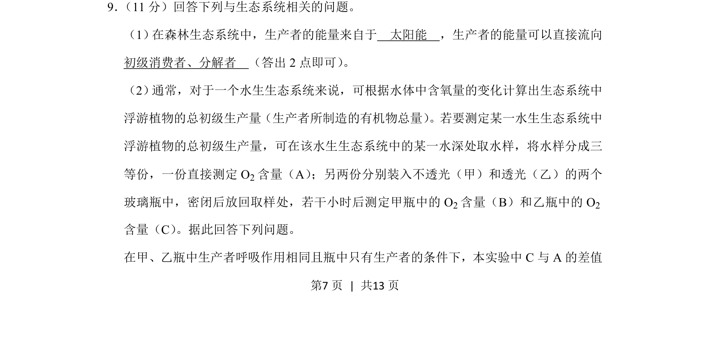
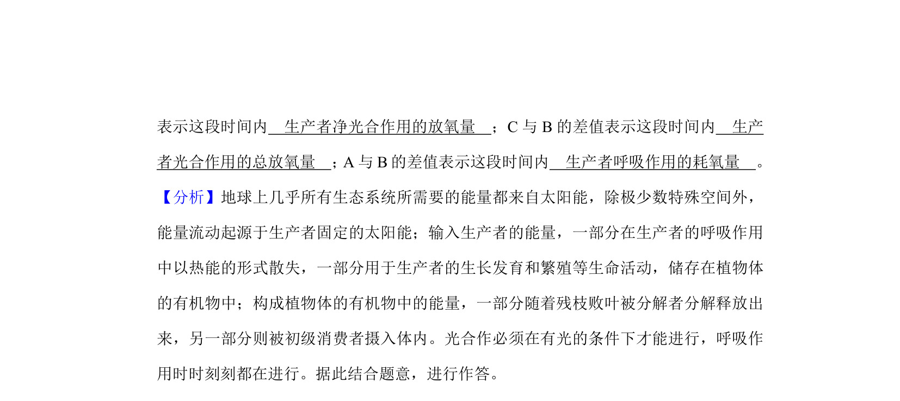
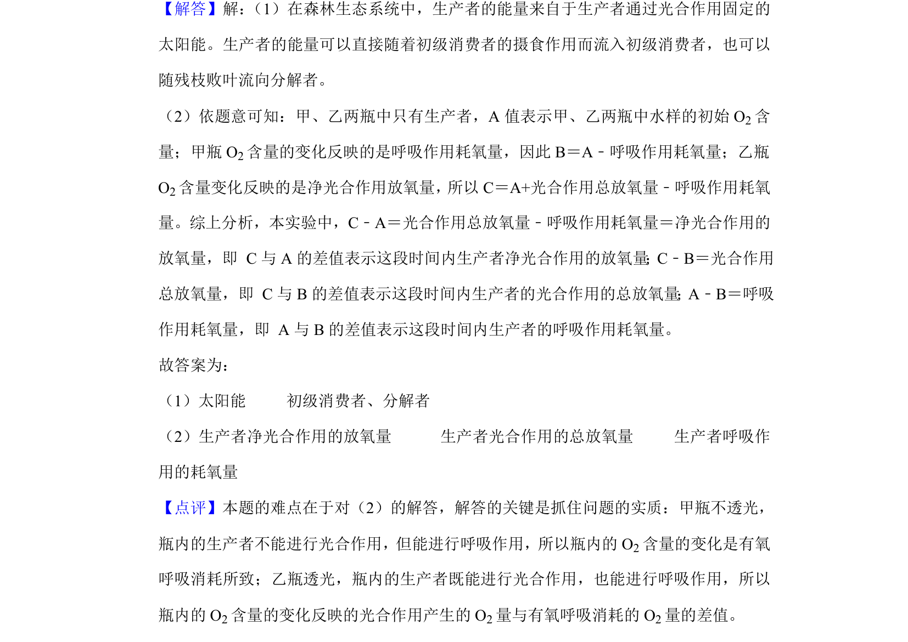

考点：生态系统 能量流动 初级生产量 黑白瓶法


考查生态系统能量来源与流向，以及利用黑白瓶法测定水生浮游植物总初级生产量。

📄 原 PDF 第 7 页：
素材/真题/吉林/2008-2024·（吉林）生物高考真题/2019年高考生物试卷（新课标Ⅱ）（解析卷）.pdf
9． （11分）回答下列与生态系统相关的问题。 （1） 在森林生态系统中，生产者的能量来自于 太阳能 ，生产者的能量可以直接流向 初级消费者、分解者 （答出2点即可） 。 （2） 通常，对于一个水生生态系统来说，可根据水体中含氧量的变化计算出生态系统中 浮游植物的总初级生产量（生产者所制造的有机物总量） 。若要测定某一水生生态系统中 浮游植物的总初级生产量，可在该水生生态系统中的某一水深处取水样，将水样分成三 等份，一份直接测定O 2含量（A） ；另两份分别装入不透光（甲）和透光（乙）的两个 玻璃瓶中，密闭后放回取样处，若干小时后测定甲瓶中的O 2含量（B）和乙瓶中的O 2 含量（C） 。据此回答下列问题。 在甲、乙瓶中生产者呼吸作用相同且瓶中只有生产者的条件下，本实验中C与A的差值